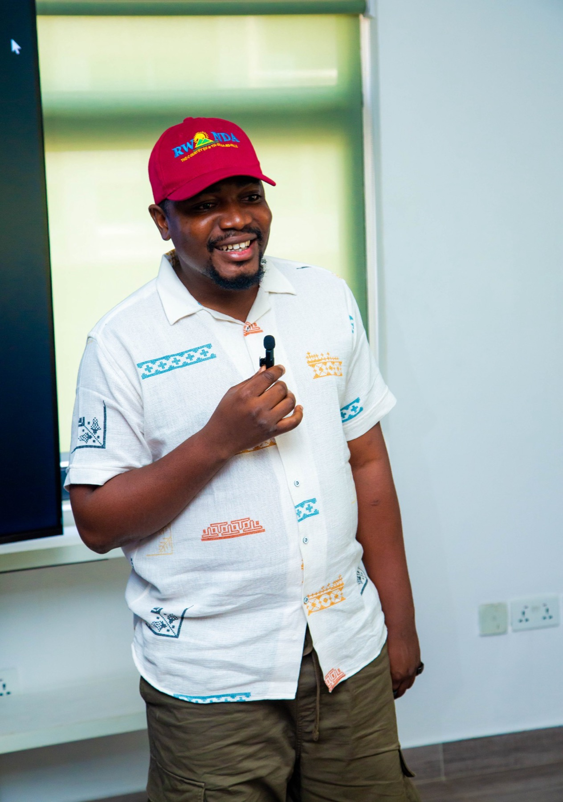
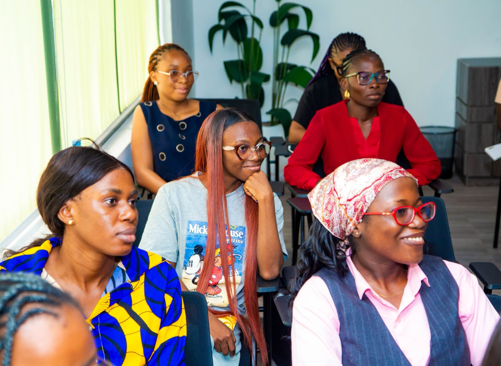
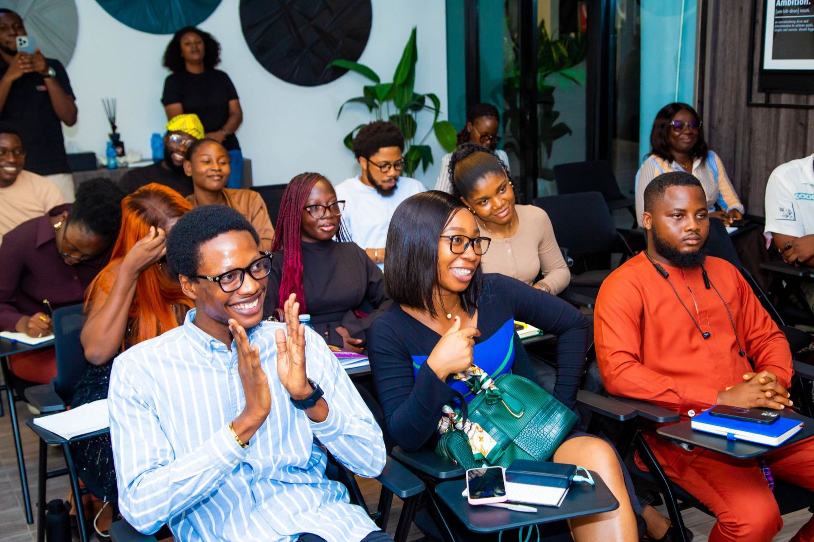

SKOT Impact Academy
A tuition-free six-week course for emerging African communications talent.
Apply for the next cohort
About the programme
SKOT Impact Academy is SKOT Communications’ social impact learning platform for early-career public relations and communications professionals. The flagship tuition-free six-week course supports professionals with one to two years of experience through real-world training, local and international facilitator perspectives, in-depth case studies, network-building and a strong understanding of both local and global communications contexts.
How the six weeks work
Learning that happens in the room, with the people doing the work.

01
Real-world training

02
Local and international facilitator perspectives

03
In-depth case studies

04
Network-building
05
Local and global communications contexts
The curriculum
The nine modules.
- 01
Foundations of strategic communication
How communication supports organisational goals, and where PR fits.
- 02
Understanding audiences and stakeholders
Mapping who matters, what they need and how they listen.
- 03
Messaging and storytelling
Turning a position into clear, credible and memorable messages.
- 04
Media relations in practice
Pitching, building journalist relationships and handling interviews.
- 05
Digital and social communications
Building presence, content and community across platforms.
- 06
Writing for impact
Press releases, statements, speeches and briefs that get read.
- 07
Crisis and reputation management
Preparing for, responding to and recovering from a crisis.
- 08
Measurement and evaluation
Setting objectives and showing what communications delivers.
- 09
Career building and professional networks
Positioning yourself, finding mentors and growing in the industry.
Inside the Academy
The cohorts, in the room.



Next cohort
Tuition-free. Six weeks. Built for emerging African communications talent.
Apply for the next cohortMore programmes